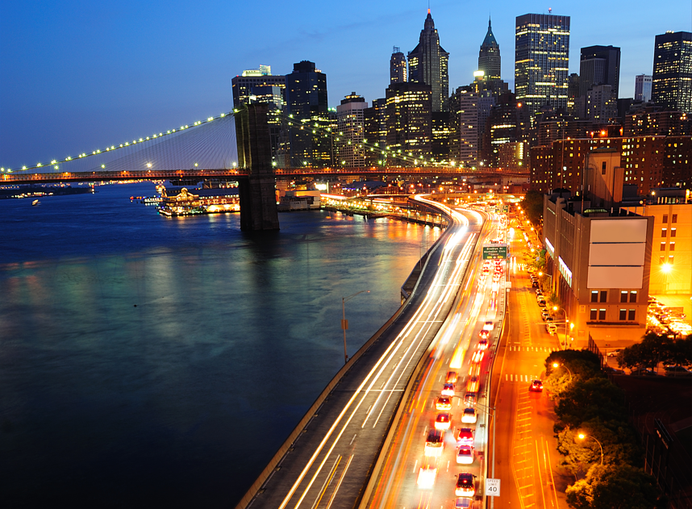
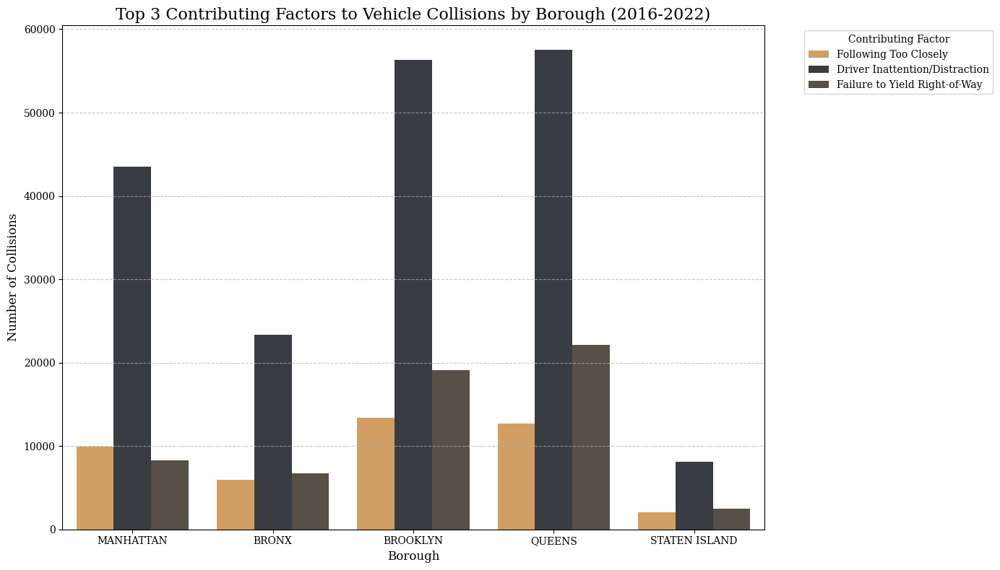
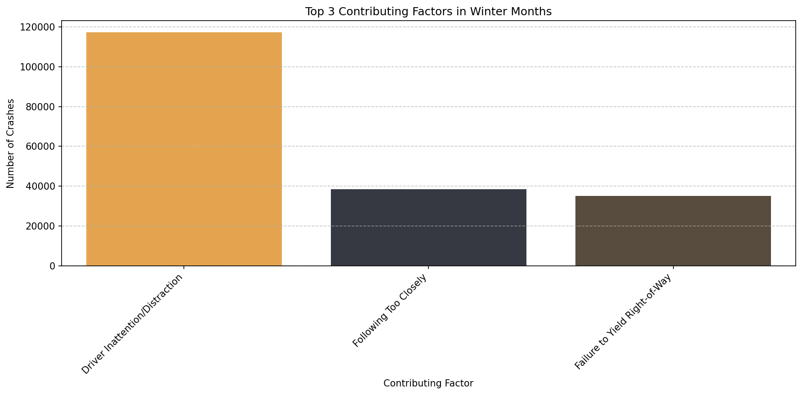
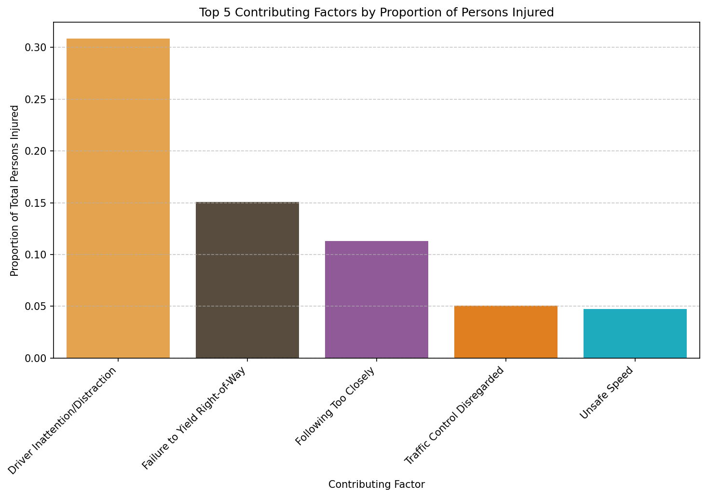
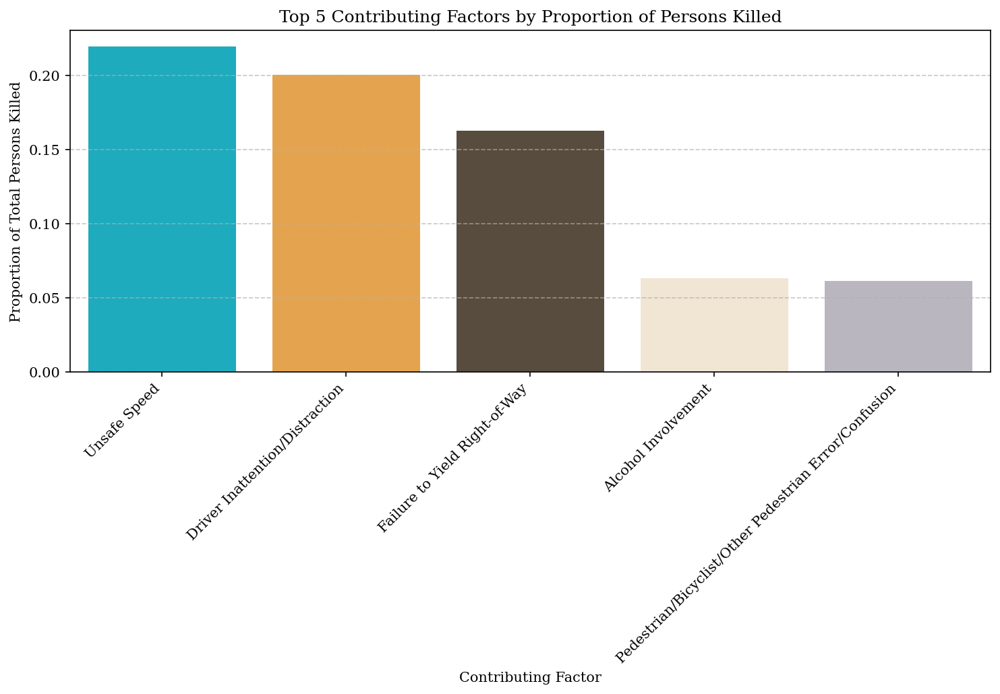
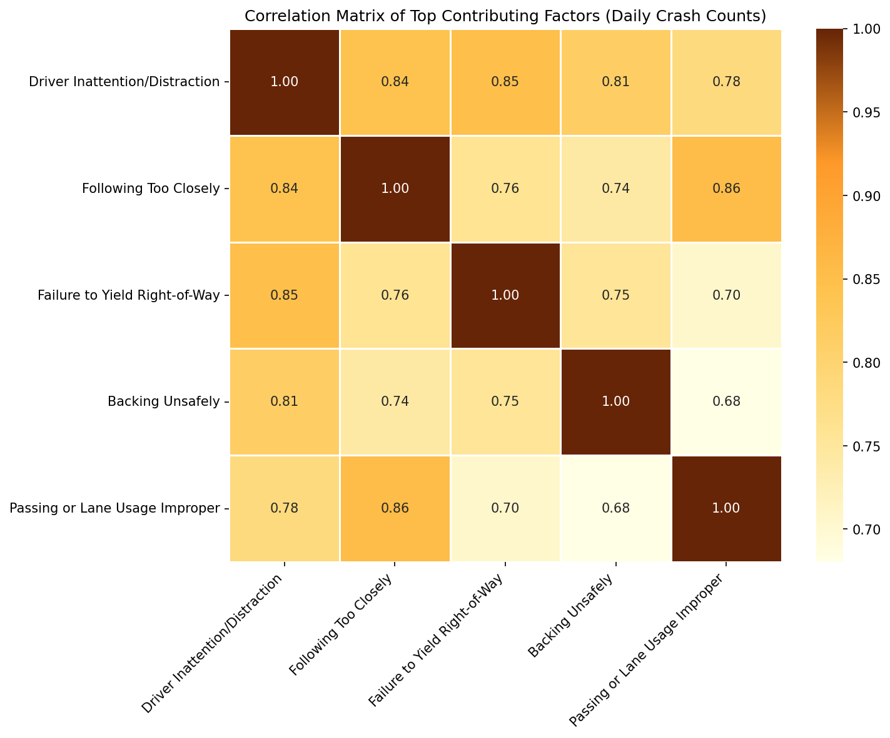

Foreign
Drivers in
New York
Every year, New York City welcomes millions of visitors who fill up the city. Many are looking forward to exploring the city's iconic culture and vibrant energy and if you are one of them, you might already started to fill up the schedule with activities and sightseeing. Transportation, might not be the first thing on your mind while planning your trip but we are here to tell, no ask, you to give it some thought.
Scared of the infamous New York Subway, you might feel tempted to rent a car or hop into a taxi. The last thing you want is to end you vacation in a car accident or experience the full wrath of an angry New York taxi driver leaning on the horn behind you. That is why we developed this data-driven guide to help foreign drivers navigate the streets and stay safe on the roads of the city that never sleeps. We will show you where and why traffic incidents happen throughout the year and how season or location affect the driving conditions. Afterwards you can dive in and explore how different types of incidents are distributed across New York City because is there any better way to prepare for a vacation than some intense data exploration?
Let's look into the data!
Looking at all the motor vehicle collisions reported in New York City what we see is a sea of incidents. Looking at it quickly, accidents seems to happen without rhyme or reason and it is almost virtually impossible to find an intersection anywhere across the city without at least one incident.
I mean look at it and try to find a crossing without any dots!
The figure shows all recorded vehicle collissions in New York city from 2013 and 2022. What this geospatial representation primarily shows is that although some areas appear to have more collisions, the dots are still spread across the entire city covering most streets and intersections.
Now, how common are car collisions in New York City? So to give an idea of the scale of the problem, we can start by breaking it down to the number of incidents reported each months between 2013 and 2022. By breaking the volume down over time, we can start to see patterns and trends across seasons or years.
The heatmap above shows the number of vehicle collisions reported in New York city over the time period 2013-2022. By comparing the color of the corresponding block to the legend on the right, we can see how many incidents were reported in a given month and year and if hovering on it, you find the exact number When looking how the color intensity varies, we can see patterns. Although the volume of crashes changes each year, and sharply declines in march 2020, as Covid-19 hits New York City, we can see that the general pattern of crashes is pretty much the same across all years. We can see that there are more crashes during the summer months and fewer crashes during the winter months. Post Covid-19, the number of vehicle collisions seems to remain lower than pre-pandemic levels, however the pattern of May and June, as well as October showing an increase of incidents resumes in 2021.
From the heatmap, we see that the number of vehicle collisions peaks in the summer months, around May and June. The period between Labor Day and Memorial Day is often called “the 100 deadliest days for teen drivers”, and some sources blame it on the increased tourism during the summer months. Increased travel, more inexperienced drivers, and heavier traffic are all factors commonly linked to the seasonal rise in crashes (Sweeney, Sweeney & Sweeney, 2019).
Is that really the case? Should you be peeking around into the other cars to determine whether the people behind or in front of you might not, in fact, be locals?
To determine the flow of tourism, we can analyze data from incoming passengers at New York airports and put it into a similar heatmap. This will allow us to see whether the patterns look similar.
The visualization above shows the number of inbound flight passengers to New York airpors LaGuardia and JFK. Although also tourism peaks in summer and in October, the pattern is different from the vehicle collision pattern. The number of incoming travelers peaks in July and August.
So, it is not as simple as assuming that one single factor explains when roads become more dangerous. The reality is more complex, with multiple seasonal and situational factors influencing driving conditions across the city.
That is why we shift our focus from simple explanations to more practical, season-specific insights. This way, we can understand what actually changes on New York roads throughout the year.
What time of the year are you travelling?
Your answer changes what you need to watch out for — pick your season:
Cool cool cool cool — not exactly.

Cars on a street in Manhattan.
You prefer sweating around the big city for your well-deserved summer break? Well, bad news buddy! Apart from it being really hot in NYC in the summer, it is also in the summer months that most vehicle collisions occur.
Take a look at this graph — June and May are peak months for vehicle collisions. What else happens in June?
Why summer spikes
- 01 Surge in tourism: New York swells with visitors during the warmer months. This doesn't just mean more vehicles on the grid; it means more rental cars, pedestrians crowding the crosswalks, and drivers navigating unfamiliar streets while glued to their GPS. Unfamiliarity breeds distraction, making it a perfect recipe for collisions.
- 02 The ultimate distraction: Hot weather brings everyone outside. You're sharing the melting asphalt with millions of pedestrians and cyclists. Add a little driver inattention to the mix and boom, accident rates spike.
- 03 Borough & severity breakdown: Location dictates the danger. Manhattan’s summer gridlock mostly results in minor, low-speed fender-benders. In contrast, the open roads of outer boroughs like Staten Island invite higher speeds, turning mistakes into fatal statistics.
Distracted driving is the real heatwave
You might think that speeding on empty summer night streets is the biggest issue, but looking at the top contributing factors, "Driver Inattention/Distraction" absolutely tops everything else. This is especially true in Brooklyn and Queens, where distracted driving accounts for over 55,000 collisions each during the summer months. "Following Too Closely" and "Failure to Yield Right-of-Way" take second and third place. The lesson? In a city packed with tourists, street performers, and tall interesting buildings, keep your eyes on the road.

Absolute count of summer vehicle collisions by the three most common causes across the five boroughs.
Brooklyn and Queens lead the casualty charts
If you are driving through the outer boroughs, stay sharp. Brooklyn and Queens take a massive lead when it comes to total summer casualties. With Brooklyn racking up over 50,000 injured individuals, the grey bars reveal a clear trend: Motorists bear the absolute brunt of the damage here. This makes sense, these boroughs rely heavily on highways and daily car commuting, increasing the sheer volume of metal-on-metal impact.
Total number of traffic casualties during summer months, broken down by motorists, cyclists, and pedestrians.
Manhattan’s Deadly Pavements
Brooklyn might have the highest total fatalities, but Manhattan tells a distinctly different and grim story. Look at the orange. While outer-borough deaths are a mix of motorists and pedestrians, Manhattan’s fatalities are overwhelmingly pedestrians. Summer in Manhattan means millions of people hitting the sidewalks, crossing avenues, and navigating chaotic intersections. If a crash turns fatal in the heart of the city, it is most likely a person on foot paying the price.
Total traffic fatalities per borough during summer months, categorized by victim type.
Manhattan might be safe after all?
So, where are you most likely to actually get hurt in a crash? Brooklyn tops the list, with over a 25% chance that a collision results in an injury. Manhattan, surprisingly, sits at the very bottom. Why? Gridlock. Summer traffic in Manhattan is often so congested and slow-moving that collisions rarely have the momentum to cause physical harm. You are highly likely to dent your bumper, but you’ll probably walk away without a scratch.
The proportion of summer accidents that result in physical injury across the five boroughs.
Staten Island looks safe? Think again
Here is the plot twist. Staten Island barely registers on the absolute volume charts, it has the fewest crashes by a mile. But look at the fatality ratio. When a crash does happen on Staten Island, it is the deadliest per capita in all of NYC. Driven almost entirely by motorist deaths (the tall grey bar), this highlights a deadly summer equation: Less congestion means open roads, open roads mean higher speeds, and higher speeds turn mistakes into fatal statistics.
The fatality rate per accident across the five boroughs, highlighting the distribution among victim types.
Cold roads, cold stats — but not safer.

Snow covered street in Brooklyn during a January snowstorm 0f 2026.
Visiting in winter? The good news: overall collision volume is lower than summer. The bad news: severity goes up — and the conditions are far less forgiving.
What you need to know for winter
- 01 Most crashes per month: December
- 02 Top three causes: Distracted drivers, following too closely and failure to yield and right of way
- 03 Most dangerous borough: Brooklyn
Be mindful of distractions
It is likely to imagine that slippery roads or snowstorms would be the top scoring contributing factors of car crashes in the winter months. Surprisingly, these contributing factors are not even in the top 3. Number one contributing factor to people getting involved in traffic collissions is the driver being distracted. This is actually not that strange when you think about it. In a city with 8 million citizens it is propably easy to get distracted on the road. So if you do decide to drive, make sure to stay focused on your driving, other people moving in traffic and last but not least, other drivers that might get distracted by the city's many impulses.

Top 3 contributing factors to vehicle collissions across New York City's five boroughs during the period 2016-2022.
What borough is the most dangerous in terms of traffic kills and injuries?
Even though we have seen that Manhattan is the borough with the largest average traffic volume, in the winter time, it does not seems to be the most dangerous of the five boroughs. Toggle the bar to jump between months to see which month and borough to be extra careful about.
Total kills and injuries for the period 2016-2022 grouped by borrow and months. Brooklyn is the month with the highest amount of affected road users across all five winter months. The highest average of killed and injured road users is in the month of December with an average of affected people on ~5100.
Brooklyn and Queens taking the lead regarding injured motorists
Brooklyn and Queens are the leading boroughs when it comes to injuries inflicted by vehicle collissions. November and December show the
highest amount of injuries and the biggest amount of injured people are in the category 'motorists'. An explanation for this can be that
more motorists end up getting involved in vehicle collissions in Brooklyn and Queens are suburbian areas where alot of citizens commute to
and from work by car.
Watch out for cyclists in Manhattan
Motorists seems to be the group of road users who occur most frequently when it comes to injuries across all months and boroughs. Motorists are followed by pedestrians who are also well represented in the group of injured road users. Cyclists also end up getting injured due to car collissions. The amount of injured cyclists are in Brooklyn and Manhattan is more or less the same, even though the total number og affected persons is ~5000 for Brooklyn and ~2000 according to the month in focus. This might mean that more people are biking in Manhattan, why you should look out for cyclists when you are navigating the busy streets of Manhattan in a car.
Amount of injuries per month for the period 2016-2022 across the five boroughs.
Christmass stress roam the streets
December seems to be a hectic month when it comes to people getting killed in connection with car collissions. The total amount of kills is highest in Brooklyn in the month of December. Manhattan follows closely in terms of killed pedestrians and cyclists. This might be a sign that lots of people are travelling by foot in Manhattan, especially during christmas when lots of christmas attractions are alive and lots of tourists are visiting NYC to see Rockefeller Center's massive Christmas tree and ice skate under the city lights (Lonely Planet, n.d.).
Amount of kills per month for the period 2016-2022 across the five boroughs.
What are the most common reasons for people getting injured or killed in the traffic in NYC?
In the winter time, unsafe speed is the contributing factor that causes most death. A reason for that might be more slippery roads and longer break times. So be mindfuld when driving in wet condisions and stay within the speedlimit! In comparison, driver inattention/distraction is the contributing factor that injuries the most people in the winter time. As always, keep your eyes on the road when driving and watch out for distacted drivers when moving around on foot or bike.

Normalized count of injured traffic users grouped by contributing factor (change colors in figure)

Normalized count of killed traffic users grouped by contributing factor (change colors in figure)
Contributing factors often go hand in hand
The heatmap shows that main contributing factors in NYC traffic collissions often go hand in hand. There is especially a strong correlation between between the contributing factors 'driver inattention/distraction' and factors such as 'failure to yield right-of-way' and 'following too closely'. This suggests that distracted driving plays a major role in many accidents across the city. Indeed, New York City is a busy and distracting place to be driving a car. The heatmap also implies that 'following too closely' and 'improper passing or lane usage' are strongly correlated and reflects the sometimes aggressive and congested nature of NYC traffic. So, if you decide to drive in NYC, keep your eyes on the road and remember that other drivers might not do the same thing. Keep a safe distance to other vehicles, and be especially causious at intersections or when changes lanes. Overall, the data suggests that collisions in NYC are often caused by several risky driving behaviors occurring at the same time rather than by a single mistake.

Correlation matrix of top contributing factors. The R2 values are generally high for all comparisons, which indicates that contributing factors to car collissions have a high change of being correlated. The R2-value quantifies the proportion of variation in the dependent variable that can be explained by the independent variable. In other words, a R2-value of 95% means that 95% of the data variation in the dependent variable can be explained by the independent variable (Coefficient of Determination, n.d.).
The bottom line
Regardless of wether you are visiting in the summer or winter, stay alert and keep your eyes on the road. Keep to the speed limits, especially in the winter time when roads may be slippery. And remember: vehicle collisions happen without too much rhyme or reason. Even though there are seasonal patterns, there are so many incidents every year. Even though collissions peak with the glimmering christmas lights and in the summer months when lots of tourists visit during their summer break, this does not mean you can relax on a regular Wednesday at 1 in the afternoon.
What this data really shows is that vehicle collisions happen all the time, for reason or no reason at all. There are not many spots in New York where there has not been a vehicle collision in the past 20 years.
So if you are driving in New York: make sure you have insurance, stay updated on traffic rules — right of way, lane changes — and most importantly, do not get distracted by the towering skyscrapers around you.